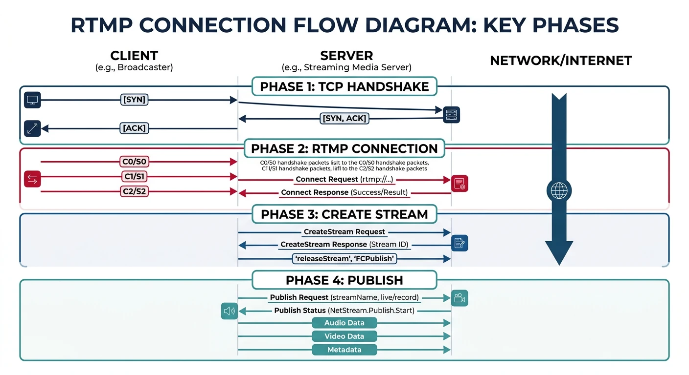
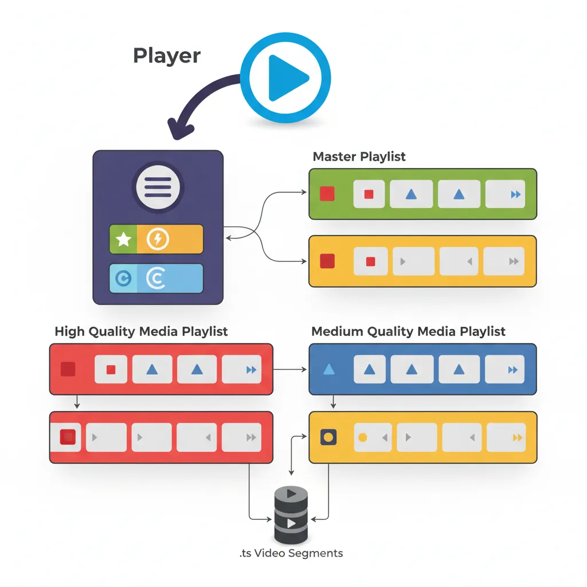
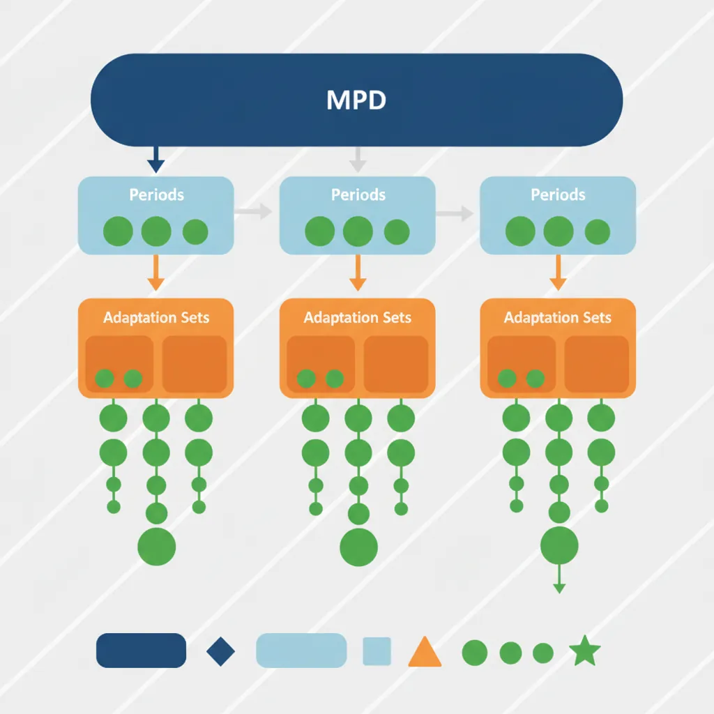
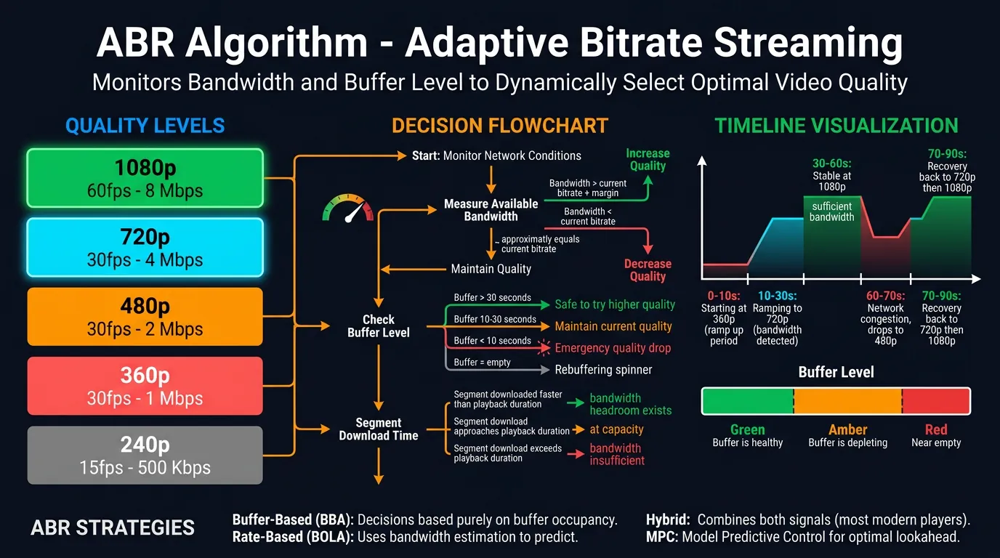
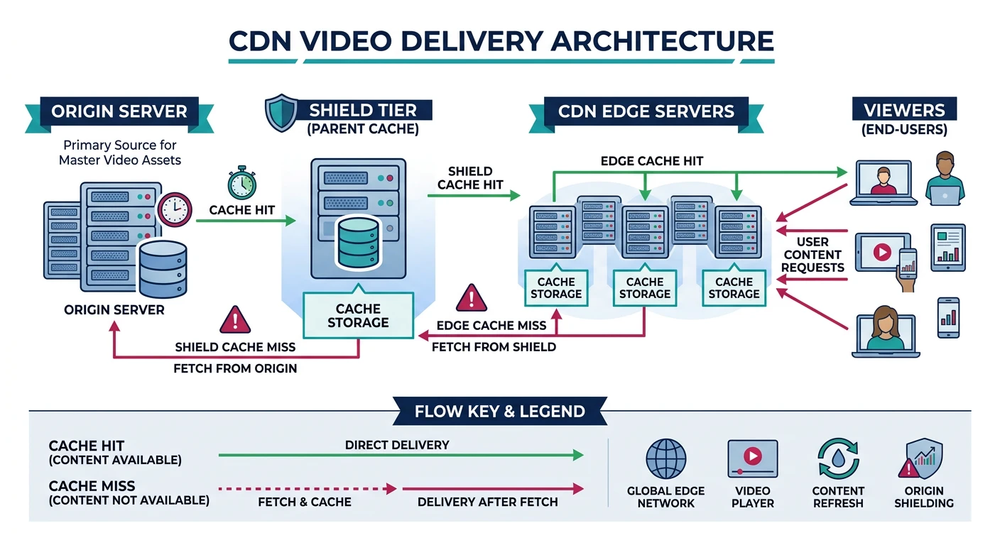

Complete Protocols Master Part 12: Streaming Protocols
January 31, 2026Wasil Zafar38 min read
Master video streaming from RTMP ingest to HLS/DASH delivery. Learn adaptive bitrate streaming, CDN integration, and build your own streaming pipeline.
Video streaming has evolved from Flash-based RTMP to HTTP-based adaptive streaming. Modern platforms use RTMP for ingest and HLS/DASH for delivery—combining low-latency capture with scalable HTTP delivery.
Series Context: This is Part 12 of 20 in the Complete Protocols Master series. Streaming protocols operate at the Application Layer, primarily over HTTP for delivery.
Streaming Pipeline:
ENCODER → INGEST → TRANSCODER → PACKAGER → CDN → PLAYER
1. ENCODER (OBS, Hardware)
• Capture video/audio
• Encode to H.264/H.265
• Send via RTMP/SRT
2. INGEST SERVER
• Receive RTMP stream
• Validate stream key
• Forward to transcoder
3. TRANSCODER
• Create multiple bitrates
• 1080p, 720p, 480p, 360p
• Adaptive streaming variants
4. PACKAGER
• Segment into chunks
• Generate HLS/DASH manifest
• Add encryption (DRM)
5. CDN
• Cache at edge locations
• Deliver to viewers globally
• Handle millions of viewers
6. PLAYER
• Fetch manifest
• Select bitrate (ABR)
• Buffer and play
Comparison
Protocol Comparison
Protocol
Use Case
Latency
Transport
RTMP
Ingest
1-3s
TCP
HLS
Delivery
10-30s
HTTP
LL-HLS
Low-latency delivery
2-5s
HTTP
DASH
Delivery
10-30s
HTTP
LL-DASH
Low-latency delivery
2-5s
HTTP
WebRTC
Ultra-low latency
<1s
UDP/TCP
SRT
Reliable ingest
1-2s
UDP
RTMP: Real-Time Messaging Protocol
RTMP was created by Adobe for Flash. While Flash is dead, RTMP lives on as the de facto standard for stream ingest—OBS, encoders, and streaming platforms all speak RTMP.

RTMP connection lifecycle: from TCP handshake through publish for live stream ingest
SRT vs RTMP:
SRT Advantages:
• UDP-based (lower latency)
• Built-in encryption (AES)
• Error correction (ARQ)
• Better over unreliable networks
• Open source (Haivision)
When to use SRT:
• Contribution links over internet
• Remote production
• When RTMP has packet loss issues
SRT Example:
ffmpeg -i input.mp4 \
-c:v libx264 -f mpegts \
'srt://server.com:9000?streamid=mystream'
# Receive SRT
ffmpeg -i 'srt://server.com:9000?mode=caller' \
-c copy output.ts
HLS: HTTP Live Streaming
HLS (Apple, 2009) is the most widely supported streaming format. It segments video into small chunks delivered over HTTP, enabling CDN caching and adaptive bitrate switching.

HLS structure: master playlist selects quality level, media playlist sequences .ts video segments
Why HTTP-based? HTTP works through firewalls, caches on CDNs, and scales massively. This is why HLS/DASH won over RTMP for delivery.
HLS Structure
HLS File Organization
HLS Directory Structure:
stream/
├── master.m3u8 # Master playlist (quality selector)
├── 1080p/
│ ├── playlist.m3u8 # Media playlist (segment list)
│ ├── segment000.ts # Video chunk (4-10 seconds)
│ ├── segment001.ts
│ └── segment002.ts
├── 720p/
│ ├── playlist.m3u8
│ └── *.ts
├── 480p/
│ ├── playlist.m3u8
│ └── *.ts
└── audio/
├── playlist.m3u8
└── *.aac
Player Flow:
1. Fetch master.m3u8
2. Select quality based on bandwidth
3. Fetch media playlist for that quality
4. Download and play segments sequentially
5. Switch quality if bandwidth changes
MPEG-DASH is the international standard for adaptive streaming. Unlike HLS (Apple proprietary), DASH is codec-agnostic and widely adopted on non-Apple platforms.

MPEG-DASH MPD manifest: Periods contain AdaptationSets with multiple Representations for adaptive quality
ABR algorithms automatically switch video quality based on network conditions. This ensures smooth playback—high quality when bandwidth allows, lower quality to prevent buffering.

ABR algorithm: monitors bandwidth and buffer level to dynamically select optimal video quality
ABR Logic
How ABR Works
ABR Decision Factors:
1. BANDWIDTH ESTIMATION
• Measure download speed of recent segments
• Weighted average (recent segments matter more)
2. BUFFER LEVEL
• How many seconds in buffer?
• Low buffer → safer (lower quality)
• High buffer → can try higher quality
3. QUALITY SWITCHING
• Switch up: Conservative (need consistent bandwidth)
• Switch down: Aggressive (prevent rebuffer)
ABR Strategies:
• Rate-based: Switch based on throughput
• Buffer-based: Switch based on buffer level
• Hybrid: Combine both signals
Example Logic:
if buffer < 5s:
select_lowest_quality()
elif throughput > 1.5 * current_bitrate:
try_higher_quality()
elif throughput < 0.8 * current_bitrate:
switch_lower_quality()
# Simple ABR algorithm simulation
def simple_abr_algorithm():
"""Demonstrate ABR quality selection"""
# Available quality levels
qualities = [
{"name": "360p", "bitrate": 800_000},
{"name": "480p", "bitrate": 1_400_000},
{"name": "720p", "bitrate": 2_800_000},
{"name": "1080p", "bitrate": 5_000_000},
]
def select_quality(throughput_bps, buffer_seconds, current_quality_idx):
"""Select quality based on throughput and buffer"""
# Safety margin (don't use 100% of bandwidth)
safe_throughput = throughput_bps * 0.8
# If buffer is critical, go to lowest
if buffer_seconds < 3:
print(f" ⚠️ Critical buffer ({buffer_seconds}s) - lowest quality")
return 0
# Find highest quality we can sustain
selected = 0
for i, q in enumerate(qualities):
if q["bitrate"] < safe_throughput:
selected = i
# Switching logic
if selected > current_quality_idx:
# Only switch up if buffer healthy
if buffer_seconds > 10:
print(f" ↑ Buffer healthy ({buffer_seconds}s) - upgrading")
return selected
else:
print(f" → Buffer moderate - staying at current")
return current_quality_idx
elif selected < current_quality_idx:
print(f" ↓ Bandwidth dropped - downgrading")
return selected
return current_quality_idx
print("ABR Algorithm Simulation")
print("=" * 50)
# Simulate scenarios
scenarios = [
(5_000_000, 15, 2), # Good bandwidth, healthy buffer
(1_000_000, 8, 2), # Bandwidth dropped
(3_000_000, 2, 1), # Critical buffer
(4_000_000, 20, 1), # Bandwidth recovered
]
for throughput, buffer, current in scenarios:
print(f"\nThroughput: {throughput/1_000_000:.1f} Mbps, "
f"Buffer: {buffer}s, Current: {qualities[current]['name']}")
new_idx = select_quality(throughput, buffer, current)
print(f" Selected: {qualities[new_idx]['name']}")
simple_abr_algorithm()
CDN Delivery
CDNs (Content Delivery Networks) cache streaming content at edge locations worldwide. This reduces latency, handles traffic spikes, and enables global reach.

CDN delivery chain: origin → shield → edge servers cache video segments closer to viewers worldwide
CDN Architecture
Video CDN Flow
CDN Video Delivery:
ORIGIN → SHIELD → EDGE → VIEWER
1. ORIGIN SERVER
• Source of truth
• Generates HLS/DASH
• Only 1 location
2. SHIELD (Mid-tier)
• Reduces origin load
• First cache layer
• Few locations (1-3)
3. EDGE SERVERS
• Close to viewers
• Final cache layer
• 100+ locations globally
Cache Logic:
1. Viewer requests segment001.ts
2. Edge: Cache miss → ask Shield
3. Shield: Cache miss → ask Origin
4. Origin returns segment
5. Shield caches + returns
6. Edge caches + returns
7. Next viewer request → Edge hit!
CDN Providers for Video:
• CloudFront (AWS)
• Fastly
• Cloudflare Stream
• Akamai
• Azure CDN
# CloudFront + HLS example
# 1. Upload HLS to S3
aws s3 sync ./stream/ s3://my-video-bucket/stream/
# 2. Create CloudFront distribution
# Origin: my-video-bucket.s3.amazonaws.com
# Cache Policy: CachingOptimized
# 3. Access via CDN
# https://d1234567890.cloudfront.net/stream/master.m3u8
# Cache Headers for HLS
# Manifest: Cache-Control: max-age=2 (live) or max-age=31536000 (VOD)
# Segments: Cache-Control: max-age=31536000 (immutable)
# Nginx config for HLS
location /hls/ {
types {
application/vnd.apple.mpegurl m3u8;
video/mp2t ts;
}
root /var/www/stream;
add_header Cache-Control "max-age=31536000";
}
location ~ \.m3u8$ {
add_header Cache-Control "max-age=2"; # Short cache for live manifest
}
FFmpeg Streaming Pipeline
FFmpeg is the Swiss Army knife of video processing. Here are practical commands for building a complete streaming pipeline.